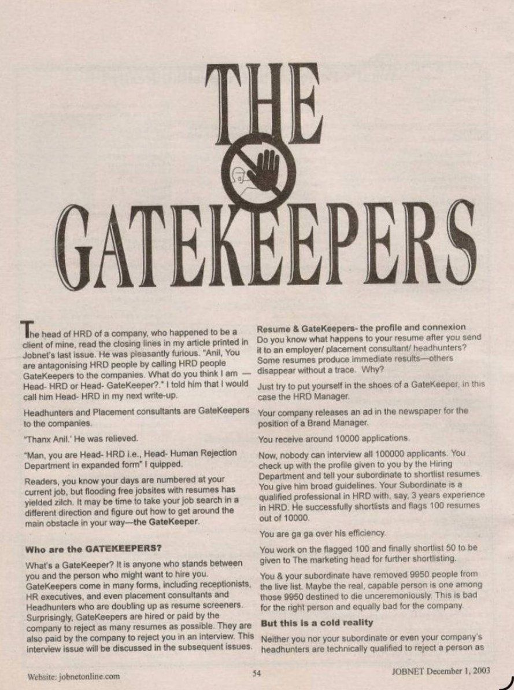
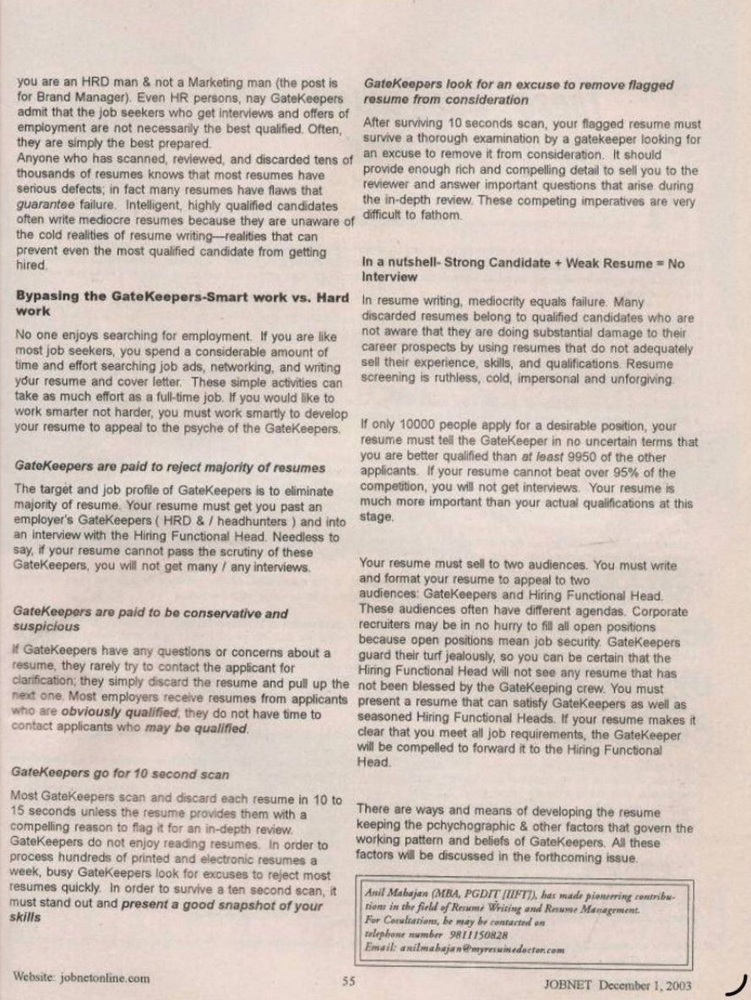

JOBNET Career Intelligence
Understanding the Invisible Decision-Makers in Recruitment
About This Article
In this landmark article, Anil Mahajan introduced a concept that fundamentally changed how job seekers viewed the recruitment process — the GateKeeper. Rather than assuming that resumes reach hiring managers directly, the article explained that every organisation has professionals who act as the first level of evaluation.
More than twenty years later, the role of the GateKeeper has expanded beyond HR professionals to include Applicant Tracking Systems, Artificial Intelligence, executive search consultants, talent acquisition specialists and digital recruitment platforms.
Original Publication
Scanned pages from the original printed publication.

JOBNET December 2003 — Page 1

JOBNET December 2003 — Page 2
Article Transcript
Originally published in JOBNET — December 2003
The head of HRD of a company, who happened to be a client of mine, read the closing lines in my article printed in Jobnet's last issue. He was pleasantly furious. "Anil, You are antagonising HRD people by calling HRD people GateKeepers to the companies. What do you think I am — Head-HRD or Head-GateKeeper?"
I told him that I would call him Head-HRD in my next write-up. Headhunters and Placement consultants are GateKeepers to the companies.
"Thanx Anil." He was relieved.
"Man, you are Head-HRD i.e., Head-Human Rejection Department in expanded form" I quipped.
Readers, you know your days are numbered at your current job, but flooding free job sites with resumes has yielded zilch. It may be time to take your job search in a different direction and figure out how to get around the main obstacle in your way — the GateKeeper.
Definition
What's a GateKeeper? It is anyone who stands between you and the person who might want to hire you. GateKeepers come in many forms, including receptionists, HR executives, and even placement consultants and headhunters who are doubling up as resume screeners.
They are also paid by the company to reject you in an interview. This interview issue will be discussed in subsequent issues.
Reality Check
Do you know what happens to your resume after you send it to an employer, placement consultant or headhunter? Some resumes produce immediate results — others disappear without a trace. Why?
Just put yourself in the shoes of a GateKeeper — in this case the HRD Manager. Your company releases an ad for the position of Brand Manager. You receive around 10,000 applications. Nobody can interview all 10,000 applicants. Your subordinate — a qualified HRD professional with 3 years experience — successfully shortlists 100 resumes. You work on those 100 and finally shortlist 50 to be given to the Marketing Head for further shortlisting.
You and your subordinate have removed 9,950 people from the live list. Maybe the real, capable person is one among those 9,950 destined to die unceremoniously.
Neither you nor your subordinate — nor even your company's headhunters — are technically qualified to reject a person for a Brand Manager position, because you are an HRD person, not a Marketing person. Even HR gatekeepers admit that the job seekers who get interviews and offers of employment are not necessarily the best qualified. Often, they are simply the best prepared.
How GateKeepers Work
Reality 1
Paid to Reject
The target and job profile of GateKeepers is to eliminate the majority of resumes. Your resume must get you past them and into an interview with the Hiring Functional Head.
Reality 2
Conservative & Suspicious
If GateKeepers have any questions about a resume, they rarely contact the applicant for clarification. They simply discard it and pull up the next one.
Reality 3
10-Second Scan
Most GateKeepers scan and discard each resume in 10 to 15 seconds unless the resume provides a compelling reason to flag it for in-depth review.
Reality 4
Looking for Excuses
After surviving the 10-second scan, your resume must survive a thorough examination by a GateKeeper looking for an excuse to remove it from consideration.
In resume writing, mediocrity equals failure. Many discarded resumes belong to qualified candidates who are not aware that they are doing substantial damage to their career prospects. Resume screening is ruthless, cold, impersonal and unforgiving.
If only 10,000 people apply for a desirable position, your resume must tell the GateKeeper in no uncertain terms that you are better qualified than at least 9,950 of the other applicants. If your resume cannot beat over 95% of the competition, you will not get interviews. Your resume is much more important than your actual qualifications at this stage.
Strategy
You must write and format your resume to appeal to two audiences: GateKeepers and Hiring Functional Heads. These audiences often have different agendas. Corporate recruiters may be in no hurry to fill all open positions because open positions mean job security. GateKeepers guard their turf jealously, so you can be certain that the Hiring Functional Head will not see any resume that has not been blessed by the GateKeeping crew.
If your resume makes it clear that you meet all job requirements, the GateKeeper will be compelled to forward it to the Hiring Functional Head.
There are ways and means of developing the resume keeping the psychographic and other factors that govern the working pattern and beliefs of GateKeepers. All these factors will be discussed in the forthcoming issue. — Popularly known by candidates in India as CVSurgeon
Then & Now
When this article was published in 2003, GateKeepers were primarily HR executives, recruitment consultants and resume screeners responsible for reviewing thousands of applications manually. Today's recruitment landscape is significantly more sophisticated — but the principle remains exactly the same.
The GateKeeper has evolved. Modern GateKeepers include:
Every one of these layers evaluates a candidate from a different perspective. Success depends on satisfying each stage of the selection journey.
The Modern GateKeeper Journey
A senior executive's profile may now pass through all of these stages. Understanding each one enables professionals to prepare more effectively.
AI Resume Screening
Automated keyword and skills matching
Applicant Tracking System (ATS)
Structured data extraction and ranking
Talent Acquisition Team
Human review and initial qualification
Executive Search Consultant
Leadership capability and cultural fit assessment
Business Head / Functional Leader
Domain expertise and strategic contribution review
CEO / Managing Director / Board
Final decision on leadership and organisational fit
How the Concept Has Evolved
Then — 2003
Today — 2026
Key Takeaways
Practical Advice
Today's hiring process begins long before the interview. Every professional interaction contributes to your leadership brand.
Looking Ahead
Artificial Intelligence will continue to transform recruitment, but one principle is unlikely to change: organisations will always rely on GateKeepers — whether human or digital — to identify professionals capable of creating business value.
That core insight from The GateKeepers in 2003 remains one of the most enduring principles in executive recruitment today.
About the Author
Anil Mahajan
MBA (IIFT) · Founder & Director, C-Suite Talent Management Consulting
30+ years of executive search and leadership advisory across India and the Middle East — spanning GCCs, Defence & Aerospace, Healthcare, Consumer Electronics, Steel, Cement and Infrastructure.
Continue Reading